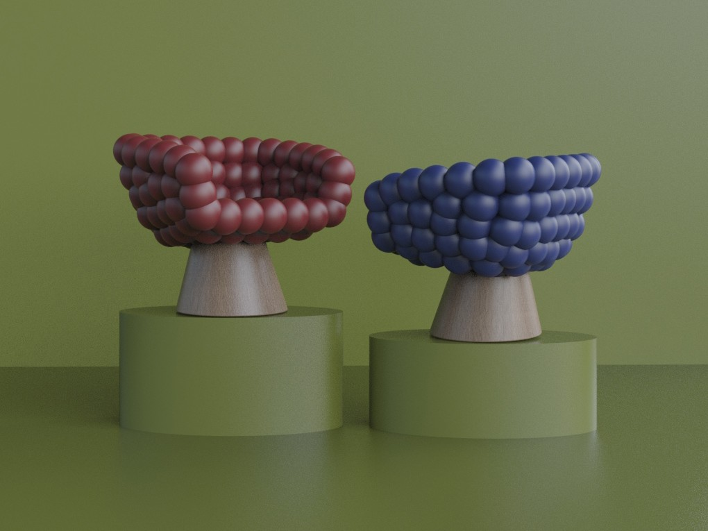

PONE
ARMCHAIR
YEAR: September 2024 – January 2025
DESIGNERS: Marika Brambilla, Paolo Corsaro, Emma Listorto, Alice Zanotto
MY ROLE & SKILLS: Concept development, technical drawings
COURSE: Product Design Studio – Furniture Design Section, Second Year, Politecnico di Milano
LECTURERS: Alessandro Deserti, Alberto Sala, Idelfonso Colombo
BRIEF:
Design a comfortable and distinctive armchair that provides an enveloping seating experience while combining functionality, comfort, and a sophisticated aesthetic.
Pone is a striking red armchair designed to provide a soft, enveloping, and comfortable seating experience. Its single-piece self-skinning polyurethane seat features overlapping spheres that create an organic, welcoming form, while also making the surface durable and easy to clean.

COMPONENTS
The armchair consists of: polyurethane seat cushion, metal frame, No-Sag springs, screws, a wooden base composed of two shells and four wooden dowels, and rubber feet.

RENDERINGS


